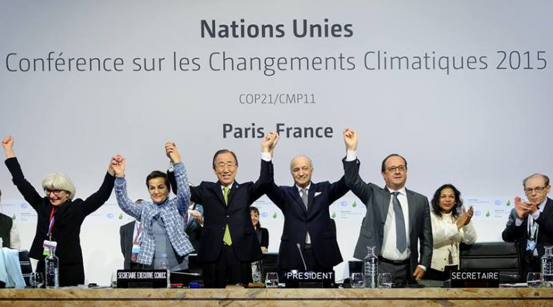
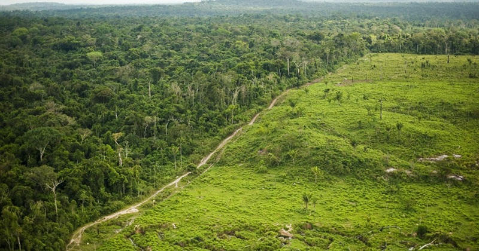
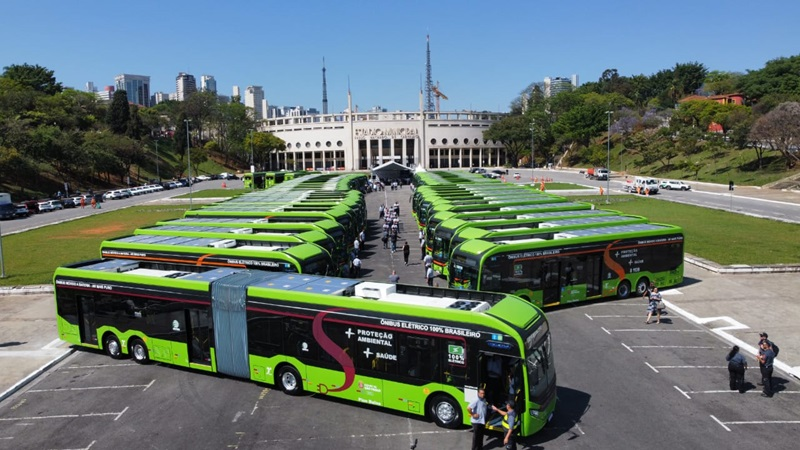
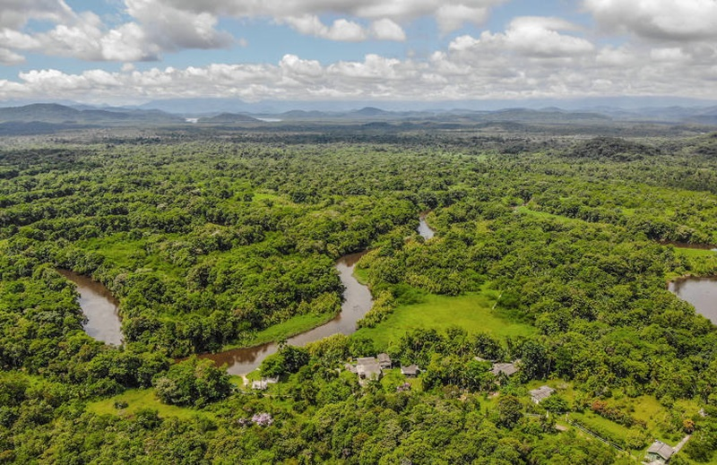

O que já está sendo feito?
Conheça algumas ações e políticas públicas que já estão sendo aplicadas em diversos países e no Brasil para combater as mudanças climáticas.
1. Acordo de Paris
Firmado em 2015, o Acordo de Paris reúne países comprometidos com a redução de emissões de gases de efeito estufa e a promoção da energia limpa.
2. Plano Nacional sobre Mudança do Clima (Brasil)
O Brasil criou um plano nacional com metas de reflorestamento, redução do desmatamento e incentivo a fontes renováveis de energia.
3. Cidades Sustentáveis
Iniciativas como ciclovias, ônibus elétricos e coleta seletiva em cidades como Curitiba e São Paulo contribuem para um ambiente urbano mais sustentável.
4. Reflorestamento e proteção de biomas
Projetos de restauração de florestas e conservação da Amazônia, Cerrado e Mata Atlântica vêm sendo aplicados com apoio de ONGs e governos.
5. Energia limpa e renovável
Avanços no uso de energia solar, eólica e hidrelétrica têm ajudado a reduzir a dependência de combustíveis fósseis.